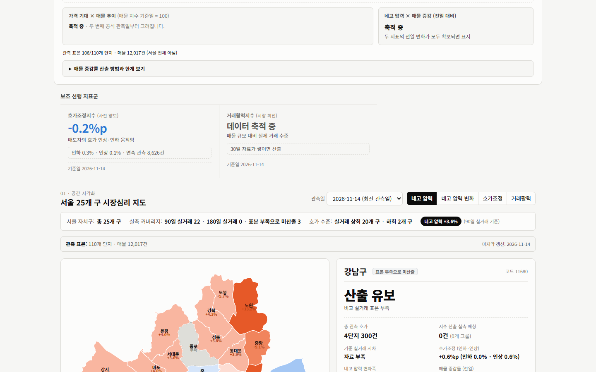
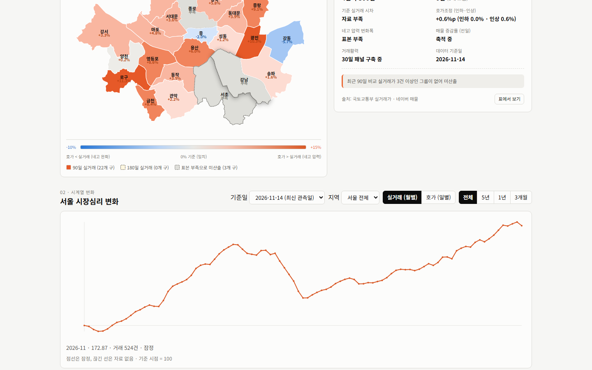
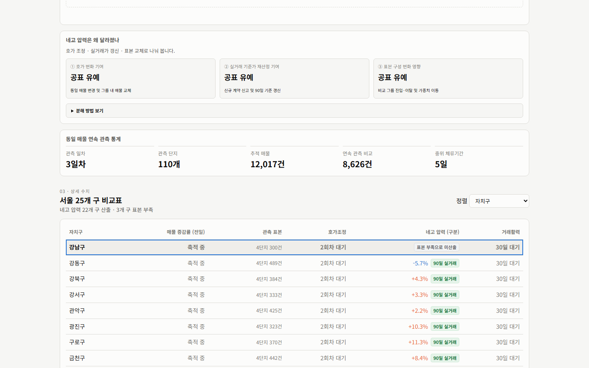

What this service is
Apartment price news starts from transaction prices. But a transaction price is the record of a contract already signed. From transaction prices alone you can't tell what owners are asking right now, or how far above actual sale prices those asking prices are.
APT Watch turns that gap into a number. It groups the same complex, the same exclusive floor area and the same floor band into one comparison group, and compares the group's current median asking price with its median transaction price over the last 90 days. The higher the asking price, the more owners are holding firm on price; when that gap narrows, it reads as more negotiation, that is, more room to bargain. Values for all of Seoul and its 25 districts are painted on a map.
Safeguards are placed wherever the numbers could wobble. The quality of each collected complex is checked one by one, the official index is published only on days when at least 105 of the 110 complexes pass, and districts with too small a sample are left as not calculated rather than filled with 0 or the Seoul average. For changes whose comparison observation dates have not yet built up, the change is not set to 0%; it is marked as accumulating.
Asking prices are sellers' hoped-for prices, not actual negotiation outcomes. The 110-complex sample is not weighted to represent Seoul's whole housing stock.
What you can see
Shows median asking price ÷ median transaction price over the last 90 days − 1, in %. It shows the daily, 7-day and 28-day changes separately, and displays "accumulating" until enough observation dates build up for comparison. The formula and method are in the collapsed explanation.
Shows how much the for-sale listings at the same sample complexes rose or fell. Only complexes that passed quality checks on both dates are compared and duplicate listing IDs are removed; new listings and ended observations are shown net of cases where only the ID changed. An ended observation does not mean the sale was completed.
The Asking-Price Adjustment Index tracks whether the same listing's price was raised or cut across consecutive observations, and the Trading Vitality Index looks at the actual contract level relative to the number of listings. There is also a graph overlaying price expectations and listing trends, and a panel that records the previous-day change of the two indicators as four combinations.
Pick one of negotiation pressure, change in negotiation pressure, asking-price adjustment or trading vitality to paint each district, and tap a district to see the number of observed complexes and listings and its 90-day and 180-day transaction coverage. You can switch observation dates to compare.
View the transaction price index (monthly) and asking price (daily) time series over all time, 5 years, 1 year or 3 months. There is also a decomposition that splits why negotiation pressure changed into three parts: the contribution of asking-price changes, the contribution of recalculating the transaction baseline, and changes in sample composition.
Sort each district's negotiation pressure, change in listings, asking-price adjustment, trading vitality and observed sample (complexes and listings) in a table. Tapping a row selects that district on the map.
Screen preview
Main — negotiation pressure and change in listings

Map — 25-district market sentiment

Time series — change in Seoul market sentiment

Comparison table — sorted figures by district
Data and calculation method
On the current screen the NEGO INDEX is +3.6% (70 comparison groups, 2026-11-14 data), negotiation pressure is calculated for 22 districts, and 3 districts (Jongno, Seocho, Gangnam) are not calculated for lack of sample. The transaction price index (monthly) is a separate fixed-effects model index that is not used in the NEGO INDEX calculation; its underlying data is 451,053 raw district-month records across 2,375 district-months (433,330 analyzed).
What can't be known
Asking prices are sellers' hoped-for prices and can differ from actual negotiation outcomes. The 110-complex sample is not weighted to represent Seoul's whole housing stock, comparison groups are concentrated in some complexes and sizes with recent transactions, and many groups rest on only 3–4 transactions. So values for districts with few groups and day-to-day changes should be treated as reference only.
If observation times vary from day to day, even observations at 06:00 and 09:00 on the same day can make listings differ by several percent. For this reason observations other than the regular collection are left out of the official rate of change and shown only for reference. The combination of negotiation pressure and listing change is just a record, not a signal verified to indicate the direction of housing prices.
This is not investment advice. Figures are continually updated; please check the Ministry of Land, Infrastructure and Transport's raw transaction data before citing them.
Technology and how it was made
Development status
Transactions updated 2026-11-14 07:00 KST. With 2026-11-14 as the first official baseline, daily, 7-day and 28-day changes are being accumulated, and the first regular change in listings will be published once the 06:00 regular collection has been normal for two days in a row.